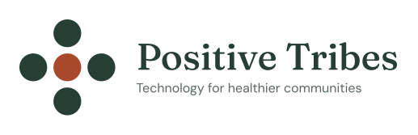

Technology for healthier communitiesPositive Tribes is a Colorado nonprofit that builds simple, custom tools for nonprofits and community groups, then hosts and maintains them. Your team gets an app shaped around its work, with no developers or IT staff to hire.
What you get
Spreadsheets, email chains and entering the same facts twice give way to one tool built around how your people already work.
Reports from the public and volunteers become maps and records ready for funders, boards and policymakers.
Try a working prototype before you commit, then go live in weeks. We host it, support it and keep improving it.
An example
A neighbor who sees a coyote with mange reports it from their phone with a photo and a map pin. A volunteer verifies it, local rehabbers get an alert, and every case is mapped for research and advocacy. A working prototype, tested by volunteers, came before any contract.
Who we are
A 501(c)(3) in Golden, Colorado. Founder Eric Roberts spent years as a Salesforce solutions engineer working with some of the largest organizations in healthcare, and now brings that experience to small nonprofits that can't afford a development team.
Positive Tribes is a 501(c)(3) nonprofit in Golden, Colorado. EIN 99-2221407.